LOCAL PREVIEW / JISHAN-HI / Reload to replay
> whoami
I'm Jishan Mulla, a DevOps Engineer working across cloud and on-prem infrastructure. I build repeatable delivery workflows, operate Kubernetes clusters, and turn troubleshooting into practical automation.
AWS · Kubernetes · Docker · Terraform · GitHub Actions · Flux CD · Prometheus · Grafana · Loki · Linux

> current_focus
Build
CI/CD and GitOps workflows
Repeatable release processes
Operate
Cloud and on-prem Kubernetes
Metrics, logs and troubleshooting
Improve
Reusable infrastructure automation
Clear runbooks and recovery procedures

> explore
Repositories · GitHub activity
Workflow animation is illustrative; contribution activity uses a real public GitHub snapshot.